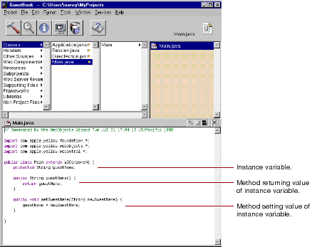
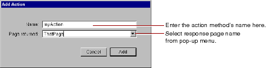

Table of Contents
Table of Contents  Next Section
Table of Contents
Next Section
Table of Contents  Previous Section
Previous Section
In this panel, you specify:
You can choose the type from the pop-up list or type it in directly. You can also use the radio buttons to specify whether the variable is an array.
The key can be an instance variable whose value is accessed directly, or a method that returns a value (not necessarily associated with an instance variable). You can also create a method that sets the value of an instance variable.

When you choose Add Action, the following panel appears:

When you click Add, the following code is added to your source file:
public ThatPage myAction()WebObjects Builder provides these ways to add variables and methods for your convenience. Of course, you can add variables and methods directly to your component's code by editing them in Project Builder.
{
ThatPage nextPage = (ThatPage)pageWithName("ThatPage");
// Initialize your component here
return nextPage;
}
The Add Variable/Method and Add Action menu items apply to the code file that appears in the menu's title, as in "Edit Main.java.". To add variables and methods to the application or session code files, select application or session in the object browser first. Notice that the pull-down menu title changes accordingly. Then choose Add Variable/Method or Add Action from the pull-down menu. Deselect the keys in the object browser to return to the main component (On Mac OS X Server, command-click to deselect, and on Windows NT control-click).
To delete a key or action, you must delete it from the source code in Project Builder.
Table of Contents Next Section